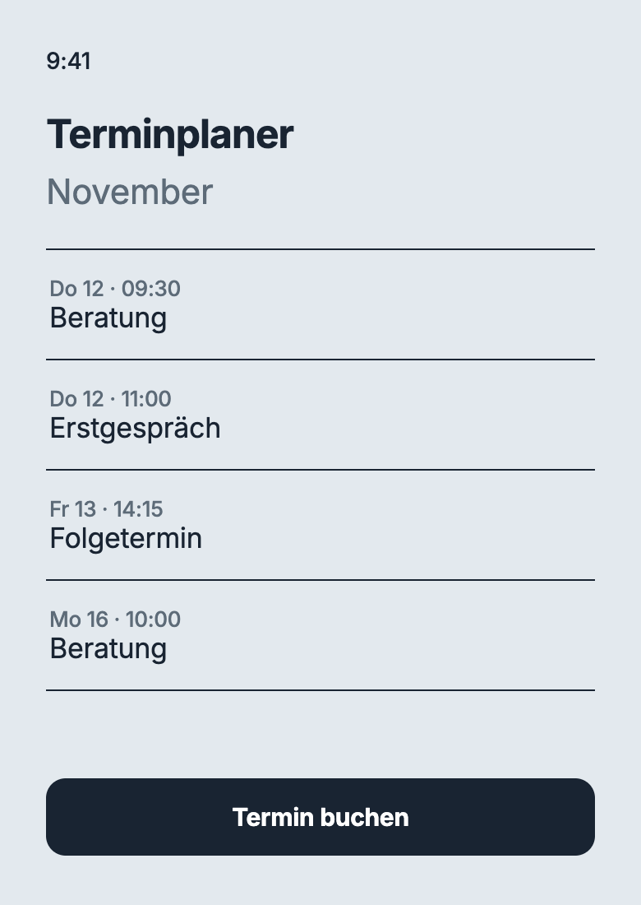
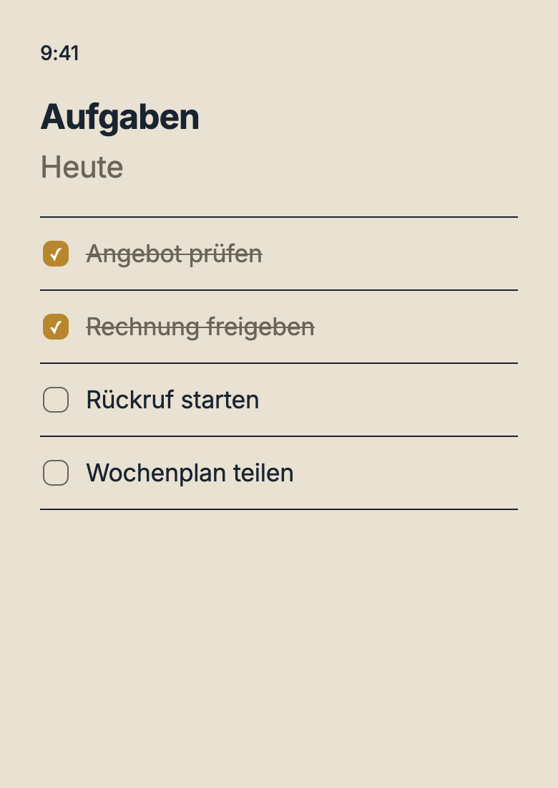
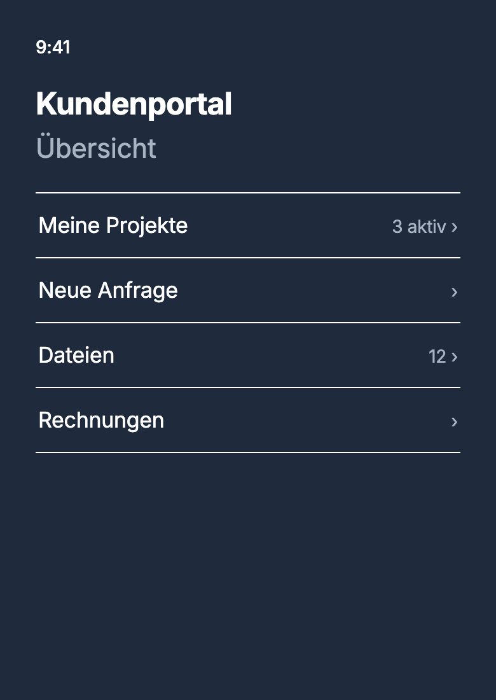
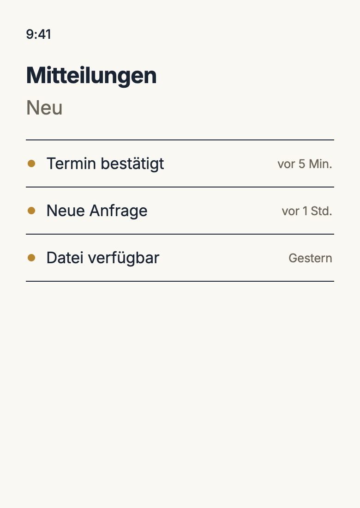
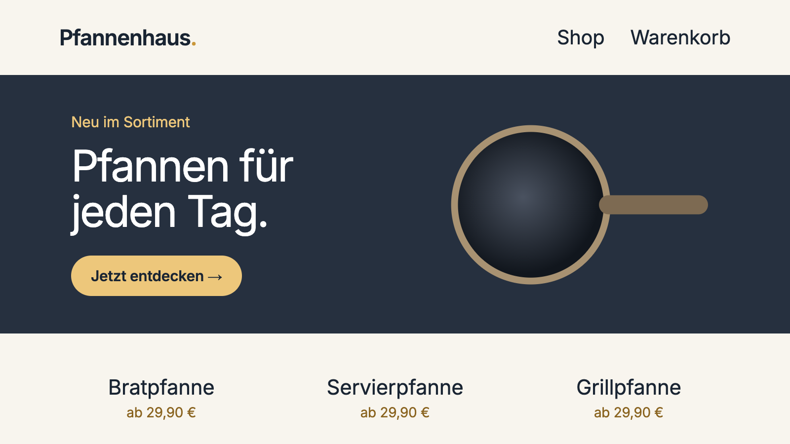
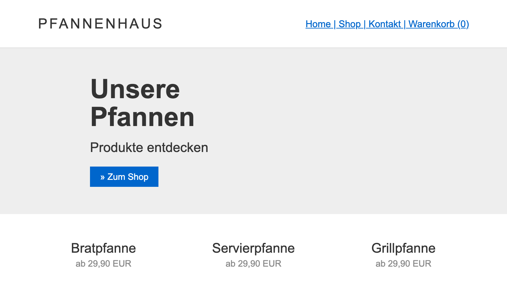

Apps, Onlineshops und Social Media.
Wir entwickeln individuelle Apps, erstellen Onlineshops mit Google-SEO und betreuen Social-Media-Auftritte für Unternehmen.
Leistungen entdeckenLeistungen01
Alle Leistungen-
Individuelle App‑Entwicklung
Apps für Web und Smartphone, die genau zu Ihren Abläufen passen – vom ersten Entwurf bis zum Launch und darüber hinaus.
Zum Beispiel: Buchungssysteme, interne Tools, Kunden-Apps -
Onlineshops & Google‑SEO
Onlineshops, die schnell laden, sich leicht pflegen lassen und bei Google gefunden werden.
Zum Beispiel: Shop-Aufbau, Produktseiten, lokale Suchmaschinenoptimierung -
Social Media für Unternehmen
Auftritte auf Instagram und Co., die zu Ihrem Unternehmen passen – Konzept, Inhalte und regelmäßige Betreuung.
Zum Beispiel: Content-Planung, Beiträge, Kanalbetreuung
Machen Sie mehr aus Ihrer
Idee.
Wir entwickeln Apps und Onlineshops und betreuen Ihren Social-Media-Auftritt.
Projekt besprechenAusgewählte Projekte
Eine App, die zu Ihrem Unternehmen passt.
Von der Onlinebuchung bis zum internen Aufgabenplaner: Wir entwickeln Apps für die Abläufe, die Ihr Team und Ihre Kunden täglich nutzen.
- Terminplaner
- Aufgaben
- Kundenportal
- Mitteilungen




Ein neuer Auftritt für den Onlineshop.
Ziehen Sie den Regler, um Vorher und Nachher zu vergleichen.


Die Menschen hinter Zetac.
Wir sind ein Digitalstudio aus Paderborn und entwickeln individuelle Apps und Onlineshops.
Bei uns sprechen Sie direkt mit den Menschen, die Ihr Projekt umsetzen.